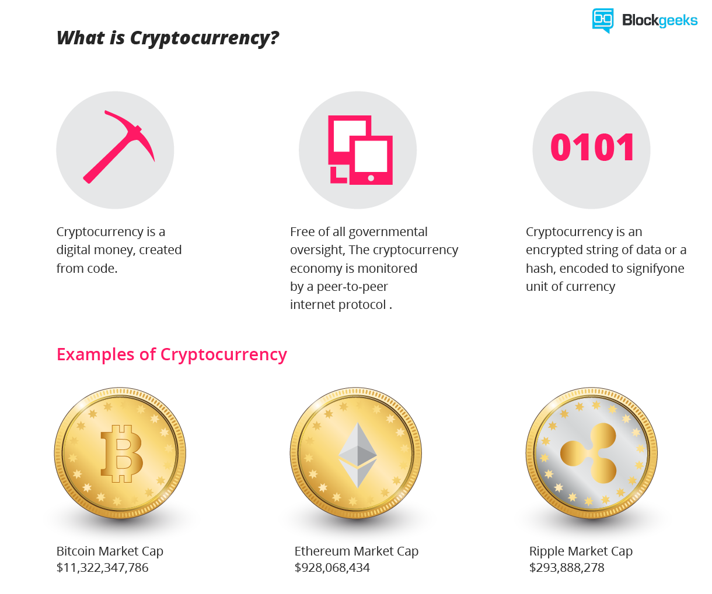
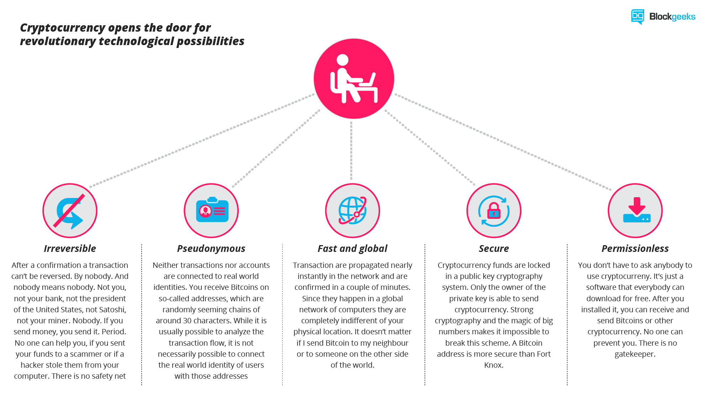

Today cryptocurrencies have become a global phenomenon known to most people. While still somehow geeky and not understood by most people, banks, governments and many companies are aware of its importance
cryptocurrency is a decentralized digital currency, created and held electronically, It cannot be physically seen or feel, but is used for online transactions, making and receiving payments, just like internet banking. because cryptocurrency uses cryptography for security so we can do peer to peer transaction between two peoples anonymously. Bitcoin is often referred to as the world’s first cryptocurrency
specifically, cryptography is about creating codes for data, that prevent third parties or the public from reading private messages.
one of the most defining feature of cryptocurrency is , that it is decentralized. It means no government or bank has control over it. It has its own value and is based upon the demand and supply for it in the market .Just like gold, it has its own value.
Who create it?
A software developer called Satoshi Nakamoto proposed bitcoin, which was an electronic payment system based on mathematical proof. The idea was to produce a currency independent of any central authority, transferable electronically, more or less instantly, with very low transaction fees
Other cryptocurrencies, followed Bitcoin and came into existence more or less in a similar way to it, with some changes, in order to differentiate and compete with each other.
As of now, more than 700 crypto currencies are trading in the market, but only few of them are gaining popularity. Bitcoin, is the most popluar cryptocurrency as of now.

What are its characteristics?
cryptocurrencies have several important features that set it apart from government-backed currencies.
1. It's decentralized
The bitcoin network isn’t controlled by one central authority. Every machine that mines bitcoin and processes transactions makes up a part of the network, and the machines work together
2. It's easy to set up
you can set up a bitcoin address in seconds, no questions asked, and with no fees payable.
3. It's anonymous
Well, kind of. Users can hold multiple bitcoin addresses, and they aren’t linked to names, addresses, or other personally identifying information.
4. It's completely transparent
…bitcoin stores details of every single transaction that ever happened in the network in a huge version of a general ledger, called the blockchain.
If you have a publicly used bitcoin address, anyone can tell how many bitcoins are stored at that address. They just don’t know that it’s yours.
5. Transaction fees are miniscule
Your bank may charge you a $100 fee for international transfers. Bitcoin doesn’t.
6. It’s fast
You can send money anywhere and it will arrive minutes later, as soon as the bitcoin network processes the payment.
7. It’s non-repudiable
When your bitcoins are sent, there’s no getting them back, unless the recipient returns them to you. They’re gone forever.

Advantages of Cryptocurrency
Here are good reasons why it’s worth taking the time to get involved in this virtual currency.
It’s fast
When you pay a cheque from another bank into your bank, the bank will often hold that money for several days, because it can’t trust that the funds are really available. Similarly, international wire transfers can take a relatively long time. Bitcoin transactions, however, are generally far faster.
It’s cheap
Some merchants will charge a fee for debit card transactions too, as they have to pay a ‘swipe fee’ for fulfilling them. Bitcoin transaction fees are minimal, or in some cases free.
Central governments can’t take it away
the currency is decentralized, you own it. No central authority has control, and so a bank can’t take it away from you. For those who find their trust in the traditional banking system unravelling, that’s a big benefit
There are no chargebacks
Once bitcoins have been sent, they’re gone. A person who has sent bitcoins cannot try to retrieve them without the recipient’s consent. This makes it difficult to commit the kind of fraud that we often see with credit cards, in which people make a purchase and then contact the credit card company to make a chargeback, effectively reversing the transaction.
People can’t steal your payment information from merchants
This is a big one. Online forms require you to enter all your secret information (the credit card number, expiry date, and CSV number) into a web form. It’s hard to think of a less secure way to do online business. This is why credit card numbers keep being stolen.
Bitcoin transactions, however, don’t require you to give up any secret information.
You can create your own money
any national governments don’t allow you to producing your own money. With bitcoin, however, it is encouraged . you can also mine your own if you have enough computing power. After covering your initial investment in equipment and electricity, mining bitcoins is simply a case of leaving the machine switched on, and the software running.
You can’t churn out unlimited bitcoins
That’s right. The bitcoin protocol – the rules that make bitcoin work – say that only 21 million bitcoins can ever be created by miners. However, these coins can be divided into smaller parts (the smallest divisible amount is one hundred millionth of a bitcoin and is called a ‘Satoshi’
How are new currencies created?
New bitcoins are created by decentralized process called “Mining”. Bitcoin miners are processing and validating transactions and securing the network using specialized hardware and softwares developed specifically for Bitcoin mining and in return are collecting new bitcoins in exchange. Its like,as a bank clerk performs verifying of transaction,collecting and depositing cash,etc and getting paid in return, similarly a miner performs the job of validating the transactions and securing the network and in return gettimg rewarded by new bitcoins generated by the bitcoin network
How cryptocurrency value determine?
The price of any cryptocurrency is determined by simple market rule of demand and supply. When demand for particular cryptocurrency increases, the price increases, and when demand falls, the price falls. There is only a limited number of bitcoins in circulation and new bitcoins are created at a predictable and decreasing rate, which means that demand must follow this level of inflation to keep the price stable.